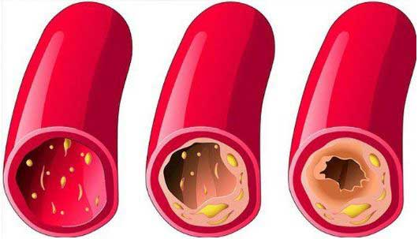
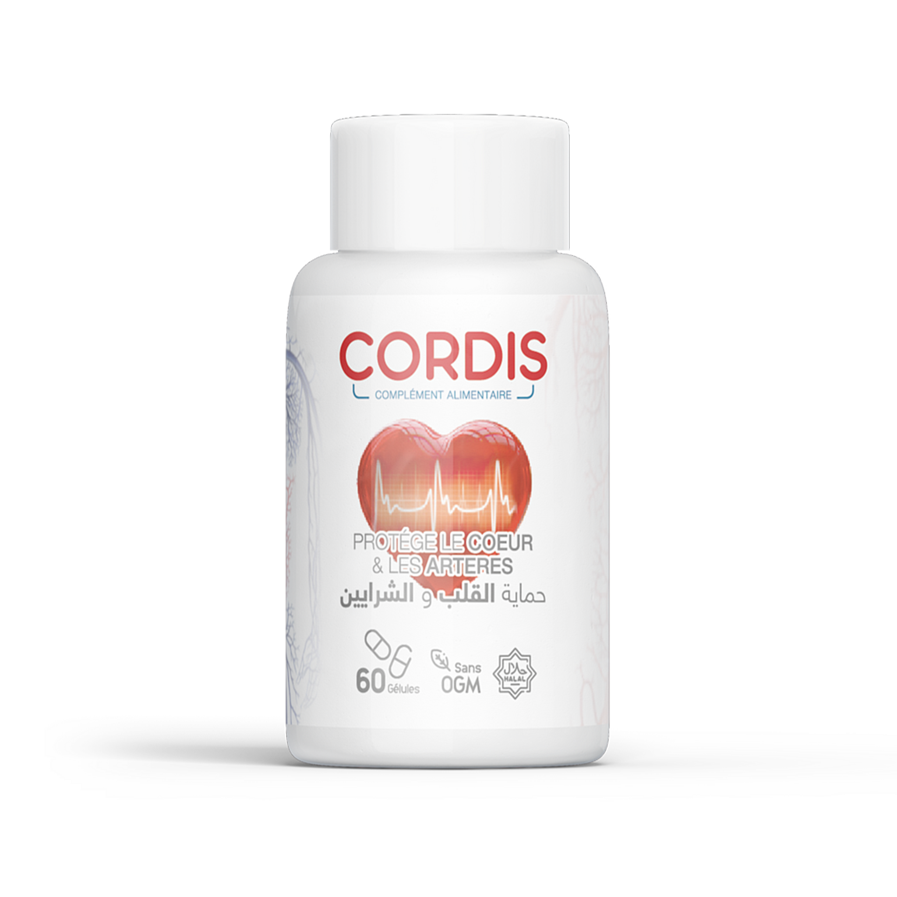

وفقًا لطبيبة قلب تبلغ من العمر 70 عامًا، فإن العمر ليس عائقاً بالنسبة لها في الحياة , كما أنها تشارك سرها لإطالة العمر .
تركت جهاد عمار، طبيبة القلب البارزة من الجزائر، وظيفتها حين بلغت الستين من عمرها. ومع ذلك، لم تتأثر بالشيخوخة، لم يؤثر العمر عليها جسديًا ولا عقليًا. تقاعدت منذ 10 سنوات , ولكن في سن 70 عامًا جهاد كانت تبدو وكأنها تبلغ من العمر 60 عامًا.
السر وراء طول العمر عند الشخص المتقدم في السن يكمن في الأوعية الدموية. طالما أنها نظيفة وصحية، فقد ينتهي بك الأمر بالعيش لمدة تصل إلى 120 عامًا أوأكثر. وطبيبة القلب المتقاعدة شهادة حية على ذلك.
تمكن أحد المراسلين لدينا من إجراء مقابلة معها. تقدم الدكتورة جهاد عمار شرحًا تفصيليًا للطرق الي اتبعتها للتأكد من نظافة أوعيتها الدموية ، وهو السبب الرئيسي في إطالة عمرها.
د. جهاد عمار- عندما سأل المراسل "د. جهاد عمار، جعلتنا في كثير من الأحيان نفهم بأن الأوعية الدموية النظيفة ضرورية لصحة جيدة. ما هو سبب ذلك"؟
-"سوف اعطيك إجابة واضحة تمامًا. لان تعتمد جميع وظائف الأجهزة والأنظمة الداخلية على جودة الدورة الدموية. في حال انك لا تعرف بوضوح اهمية الدورة الدموية ، فهي مسؤولة عن إمداد الأكسجين والمواد المغذية وهي مسؤولة أيضًا عن طرد ثاني أكسيد الكربون والمنتجات الضارة الناتجة عن التمثيل الغذائي في الأعضاء الداخلية. خلال مرحلة الطفولة والشباب ، يكون المرء نشيط جداً ، وتكون الأوعية الدموية شابة مرنة مازالت نظيفة ، وبالتالي ليتم تغذية جميع أعضاء الجسم بشكل مثالي. لكن حين تبدأ الشيخوخة في الظهور ، لن نصبح نشيطين كما كنا بشبابنا ، وبالتالي يزداد تلوث هذه الأوعية . هناك مجموعة متنوعة من العوامل مسؤولة عن ذلك ، مثلا عادة التدخين وسوء التغذية والعيش في بيئة غير صحية والعامل الطبيعي لهذا, هو ترسب الدهون الي يحدث في جسم كل إنسان مع تقدمه في العمر
تخيل أنابيب ممتلئة بالصدأ و الضغط يزداد نتيجة المياه الي تمر من خلال تلك الأنابيب, يصبح طعم الماء سيئ . هذت شيء يفسر ما يحدث مع الأوعية الدموية المسدودة. حيث يترسب الكوليسترول والمواد الأخرى في الأوعية الدموية ، و يزداد ضغط الدم والأوعية الدموية المسدودة بالطبع هي السبب الرئيسي لإرتفاع ضغط الدم, لأن الأوعية غير نظيفة والدورة الدموية تزداد سوءًا. نتيجة هذا هو أن جميع أعضاء الجسم الأخرى ينتهي بهم الأمر بالمعاناة .
لذلك مع تقدم العمر بشكل تدريجي. طالما أن الأوعية الدموية يتم تنظيفها من وقت لآخر ، يمكن للمرء أن يبقى على قيد الحياة لمدة تصل إلى 120 عامًا دون أن يمرض . تكتشف أن جميع الأعضاء والأهم من ذلك أن الدماغ يعمل على النحو الأمثل. هذا يعني أن الحفاظ على مجرى الدم نظيف يمكن أن يحسن الصحة بشكل كبير ويطيل العمر.
 هذا هو شكل الأوعية الدموية حين تكون بها ترسبات و ملوثة"ما هي الأمراض الي تسببها إنسداد الأوعية الدموية؟"
"كما ذكرت فالسابق ، فإن جميع أعضاء الجسم تعاني من هذا شيء ، ولكن الأعضاء الي تتأثر أولاً هي التي مرتبطة مباشرة بالدورة الدموية ، وهو نظام القلب والأوعية الدموية."
بمجرد تلوث الأوعية الدموية ، تظهر أمراض أخرى نتيجةً لذلك و هي كالأتي :
- تصلب الشرايين: حالة تتوقف فيها الأوعية الدموية عن العمل ، حيث يتم إنسداد الأوردة الدقيقة تمامًا بينما تتمتلئ الأوردة الكبيرة برواسب الكوليسترول.
- مرض إقفار عضلة القلب: يحدث بسبب الفقد المستمر للدم في الأوعية التاجية مما تؤدي إلى تلوث الأوعية الدموية في الأوردة والشرايين.
- ارتفاع ضغط الدم: حين تتقلص الأوعية الدموية بسبب الإنسداد ، يؤدي ذلك إلى إرتفاع ضغط الدم.
- تضخم الساقين: أكثر ما يُلاحظ حدوثه عند النساء ، تسبب في الأساس ضيقًا في الساقين. أحد تداعيات هذه الحالة هو ظهور البواسير
- السكتة الدماغية: بمجرد حدوث ضرر في إمداد الدم إلى أنسجة المخ ، النتيجة تكون نهاية العصب و تبدأ في الموت مما يؤدي إلى إستنفاذ بعض وظائف الأعضاء
- الخثار الوريدي والشرياني: يُلاحظ أن الجلطات الدموية تبدأ في التكون في الأوعية الدموية إذا استمر التلوث لفترة طويلة من الزمن ، وقد يؤدي إلى تلف الأوعية الدموية بالكامل ، مما يتسبب في موت الخلايا الفردية في عضو واحد أو في الجسم ,في هذه الحالة ينتج الخثار الوريدي ، فقد تؤدي إلى إنسداد الأوعية الدموية في القلب المسؤولة عن النوبة القلبية ، وتتنتهي 70٪ من حالات النوبة القلبية هذه دائمًا بالموت
أنواع أمراض القلب
تمدد الأوعية الدموية في القلب

تمدد الأوعية الدموية
الترسبات الدهنية

مرض القلب التاجي
اتساع البطين

سكتة قلبية
تتوقع الدكتورة جهاد أن الكثير من الوفيات المرتبطة بسبب إنسداد القلب والأوعية الدموية أكثر من الأمراض الأخرى مجتمعة. ليعرف الأطباء بهذا الأمر ويدركوا أيضًا أهمية تطهير الأوعية الدموية ، لكن للأسف كثير من الأطباء لا يعرفون أهمية الأوعية الدموية في المجال الطبي. للتخلص من إرتفاع ضغط الدم ، توصف حبوب ضغط الدم في الغالب للمساعدة في خفض ضغط الدم. ومع ذلك ،فإن هذه الحبوب هي مجرد حل مؤقت و لا تساعد علي المدي البعيد ، والطريقة الوحيدة للتخلص من إرتفاع ضغط الدم هي تنظيف الأوعية الدموية. لأكثر من نصف قرن ، يحتاج الأشخاص في الأجزاء الغربية الي تتراوح أعمارهم بين 40 وما فوق إلى هذا الإجراء ويدركون جيداً أهميتها. لماذا يتجاهل الكثير أهمية هذا الموضوع ؟! أمر محير !
"ما هي الأعراض التي تجعل من السهل معرفة إذا كانت الأوعية الدموية ملوثة؟"
"هي كالأتي :"
- -صداع نصفي
- -التعب المزمن
- -الأرق
- -ضعف الذاكرة
- -ضغط دم مرتفع
- -ضيق التنفس والذبحة الصدرية
- -ضعف البصر والسمع
- -آلام العضلات والمفاصل
لا يهم حقاً إذا كنت تعاني من أي الأعراض المذكورة أعلاه أم لا ، فبمجرد أن تكون وصل عمرك 30 عامًا أو أكثر ، من المهم أنك تبدأ بتنظيف أوعيتك مرة واحدة على الأقل كل 5 سنوات. لتقطع شوطاً كبيراً في مساعدة نفسك على العيش بصحة جيدة.
في واقع الأمر، تؤدي الأوعية الدموية إلي عوائق أكبر مما تتخيلوا ، خاصةً عند كبار السن. هذا ليس فقط نتيجة لعادات الأكل السيئة، عن طريق أكل أشياء مثل النقانق أو حتى البيض في بعض الأحيان ينتج رواسب الكوليسترول ومع مرور الوقت، تتراكم كل هذه المواد لتؤدي إالي انسداد الأوعية الدموية.
"هل يمكنك مشاركة سرك حول كيفية تنظيف الأوعية الدموية؟"
منذ وقت طويل ، إستغرق الأمر مني شهور لخوض عملية تنظيف الأوعية الدموية. أخذت الوقت الكافي لإختيار بعض الأعشاب، وبحثت عن بعضها في السوق، وبعضها طلبته عبر الإنترنت وقمت بالإعداد. هذا الإجراء لا يفعله الان زملائي الأجانب من معهد أمراض القلب, لأنهم صنعوا منذ فترة وجيزة مكملًا غذائيًا جيد وبسعر منخفض مقارنة بحبوب الضغط اليومية التي يستخدمها مرضي الضغط , وهو مخصص بشكل أساسي لتنظيف الأوعية الدموية و إسمه CORDIS. الغرض منه هو تنظيم ضغط الدم و القضاء علي إرتفاع ضغط الدم وهو قادر على القيام بذلك عن طريق تنظيف الشرايين والأوردة. وبالتالي فهو يحقق الغرض من عيش حياة طويلة وصحية.
 اطلب CORDIS و احصل علي خصم الأنتقوم كبسولات CORDIS بعمل جيد في تنظيف الأوعية الدموية المنسدة تمامًا في غضون أسبوع إلى أسبوعين من التناول المستمر.
كما أردت أن اخبركم بحقيقة أن هذا المكمل الغذائي خالي من المواد الكيميائية ولكنه يحتوي فقط على مستخلصات عالية التركيز من النباتات المفيدة مثل : الكستناء الهندي, هامامليس , و أيضاً مونوهيدرات اللاكتوز, السيليكا الغروية, ستيرات المغنيسيوم . لذلك فهو منتج ليس ضار ولكنه ذو قيمة غذائية للجسم.
مثل العديد من المرضى الذين ما زالوا يتصلون بي للإستشارات وإجراء تطهير الدم. بدأت في التوصية بهذا المكمل الغذائي و كان مفيد للغاية لجميع اللذين استخدموه حتى الآن.
يقوم CORDIS بعمله في تنظيف الأوعية الدموية المنسدة تمامًا في غضون أسبوع إلى أسبوعين من تناوله المستمر.يمكنك زيارة موقع معهد أمراض القلب للحصول على الإحصاءات الرسمية لتنظيف الأوعية الدموية الي تم الحصول عليها من نتائج الأبحاث السريرية. كان عدد المرضى الي شاركوا في الدراسات حوالي 2000 مريض وجميعهم إستخدموا CORDIS
نتائج التجارب السريرية:
- و كما ذكر 99% من المشاركين, انه صل ضغط الدم لديهم إلى مستواه الطبيعي بعد تناول هذا المكمل الغذائي لمدة يومين فقط.
- لاحظ 97٪ من المشاركين في الإستطلاع تحسنًا في إيقاع معدل ضربات القلب
- طبقًا لما يقارب 99٪ ممن شاركوا في التجارب السريرية ، فقد تم تنظيف الأوعية الدموية لديهم من الكوليسترول تمامًا
- المنتج فعال أيضاً للأمراض المزمنة الأخرى
- أبلغ جميع المشاركين عن تحسن عام في الصحة
- لم يتم تلقي أي شكوي عن اعراض جانبية من CORDIS
"ما هي تكلفة CORDIS وأين يمكن شراؤه؟"
أنا متأكدة تمامًا من أنك تعرف إنني متقاعدة وأن أسعار المنتجات في الصيدليات باهظة الثمن جدًا بشكل عام. و هذا هو الشيء الذي لا يجعلني اوصي بمنتجات باهظة الثمن لأي شخص. CORDIS تكلفته منخفضة يتم بيعه حاليًا بسعر مخفض بنسبة 50٪ .
هذا المكمل الغذائي مسؤول بشكل أساسي عن مكافحة إرتفاع ضغط الدم.
فيما يلي مزيد من التفاصيل حول كيفية الحصول على CORDIS وتسليمها إليك ، لذلك لطلب هذا المنتج كل ما عليك القيام به هو:
- - قم بتعبئة النموذج على الموقع الرسمي .
- - سوف يقوم المنسق بعد ذلك بالاتصال بك لتأكيد عنوان التسليم الخاص بك.
- - وقت التسليم عادة ما بين 1 إلى 5 أيام و سوف يأتي إاليك موظف البريد. لتسليم دورة CORDIS إليك.
لضمان الحفاظ على نقاء الأوعية الدموية ، اوصيكم شخصيًا بتنظيف الدورة مرة واحدة كل عام إلى عامين. إن نظافة الأوعية الدموية ضروريةلكبار السن. وجود أوعية دموية نظيفة هو ضمان لصحة جيدة.
"أقدر وقتك الذي خصصته للمشاركة في هذه المقابلة التفصيلية والتعليمية للغاية، شكرًا دكتورة جهاد "
خلال مناقشة غير رسمية مع الدكتورة جهاد عمار، قالت إنها مازالت تهتم كثيرًا بالحديقة النباتية الخاصة بها وتساعد أحيانًا أحفادها أيضًا. و ينضم ليها زوجها البالغ من العمر 91 عامًا في إجراء دورة سنوية لتطهير الأوعية الدموية. قالت الطبيبة انه بدون تنظيف الأوعية الدموية لكان ربما إنهم ماتو منذ وقت طويل مثل معظم أقرانهم .
اليوم فقط خصم 50٪
السعر قبل الخصم: 11998 دينار جزائري
السعر بعد الخصم :
عند طلبك دورة CORDIS
التعليقات
مصطفى عباس

"كنت اتناول CORDIS منذ حوالي شهر ، ولكن بشكل يوميا. سرعان ما بديت أشعر بتحسن كبير. يشعر جهازي المناعي بأكمله بأنه أقوى بكثير ، مع مستوى الطاقة الذي أبذله الآن ، أشعر أنني أصغر بعشر سنوات, عمري في الواقع 50 سنة".
شروق الشارد

عرفت كل شيء عن CORDIS بالتفصيل. يجب أن أعترف ، مذهل جداً ومثير للإعجاب أيضا."
مصطفى عباس

"منذ ان بدأت في تناول CORDIS ، لم اعد بحاجة إلى حبوب كيميائية مرة أخرى. CORDIS لم أعد اعاني من ضغط الدم"
شيرين سعد

لم يعد لدي ضغط دم مرتفع. بدأت في إستخدام CORDIS منذ شهر واحد و أشعر بتحسن كبير منذ أن أخذته شكرا جزيلا لك .
ياسر الزغبي

" جربته أيضًا. إنه منتج ممتاز !!!"
سناء مدحت
"منذ حوالي شهرين ، استخدمت CORDIS لتطهير الأوعية الدموية. وأنا معجبة جداً بالنتيجة. لاحظت أنني أشعر بتعب بسهولة وبشكل متكرر بسبب انسداد الأوعية الدموية ، لكنني الآن نشيطة للغاية. الآن يمكنني القيام بضعف العمل خلال اليوم ، كما انني كنت اعاني من صداع شديد ، لكن كل ذلك إنتهى. تحسنت حالتي الصحية العامة ، لذلك لا تترددوا في طلب هذا المنتج العظيم . أنا حقا ممتنة شكرًا "